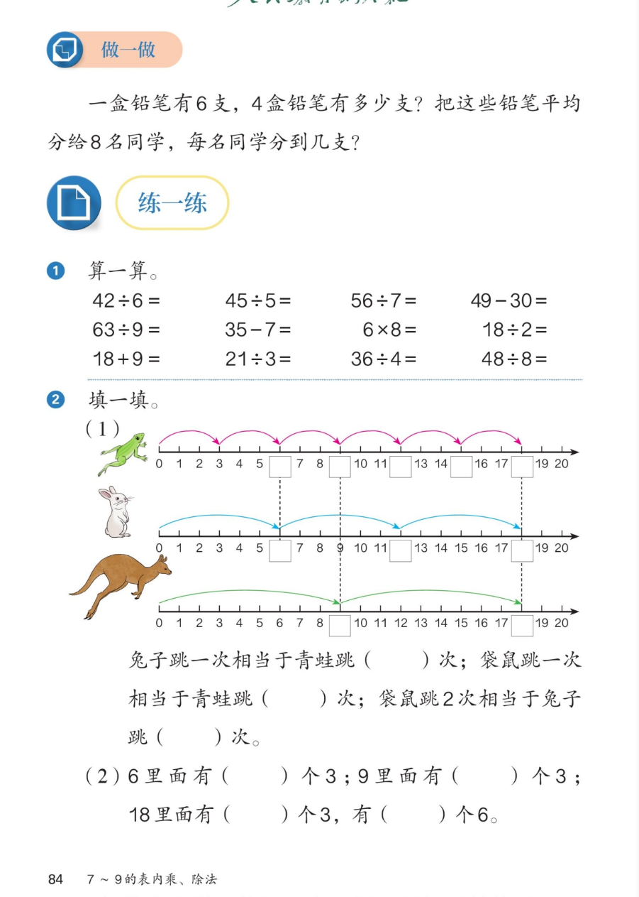

🔊 五、7~9 的表内乘、除法 · 课本第 84 页 · 做一做 + 练一练 1~2
人教版《数学》二年级上册 · 有声图文带读 · 先想后看解析 · 铅笔两连问 · 青蛙兔子袋鼠跳格图
题数
6
认知
2
强化
3
拓展
1
本页重点
连续两问 · 几里面有几个几 · 跳格找规律
🎧 分两步学：
① 解析教材图片
——纯声音读图，读到哪一块哪一块闪动提示；关键处先倒计时让你思考，再在图片下方给出解析并朗读。
② 分层提问练习
——六道分层题（认知 / 强化 / 拓展），先思考再展开解析、朗读参考答案；这一步不再回到图片。
也可以随时点任意一句话、图上任意一块单独听；点课本文字卡还会展开答案。
教材图片（点块听读，读到哪块哪块闪）

📖 人教版《数学》二年级上册 · 课本第 84 页 · 图片仅供个人学习，版权归人民教育出版社所有
🤔 想一想（点我可跳过）
课本的文字（点句子：听读 + 看答案）
做一做
铅笔两连问
看答案 ▾
第一问：6×4=
24（支）
；
第二问：24÷8=
3（支）
；
💡 先乘出总数，再平均分。
跳格图
三只小动物怎么跳？
看答案 ▾
青蛙：每次
3
格，跳
6
次 → 18；
兔子：每次
6
格，跳
3
次 → 18；
袋鼠：每次
9
格，跳
2
次 → 18。
填一填
谁的一次相当于谁的几次？
看答案 ▾
兔子 1 次 = 青蛙
2
次（6 是 3 的 2 倍）；
袋鼠 1 次 = 青蛙
3
次（9 是 3 的 3 倍）；
袋鼠 2 次 = 兔子
3
次（18 一样远）。
第2题（2）
几里面有几个几
看答案 ▾
6 里面有（
2
）个 3；9 里面有（
3
）个 3；
18 里面有（
6
）个 3，有（
3
）个 6。
分层提问练习（先想后看解析）
✏️
认知
4 盒铅笔一共有多少支？
看解析
🤔 想一想
解析：
求 4 个 6 是多少：6×4=
24（支）
；
口诀：四六二十四。
🐸
认知
青蛙每次跳几格？跳几次到 18？
看解析
🤔 想一想
解析：
每次跳
3
格，跳
6
次；
3×6=
18
，正好跳到 18。
🎒
强化
24 支铅笔平均分给 8 名同学，每人几支？
看解析
🤔 想一想
解析：
平均分用除法：24÷8=
3（支）
；
口诀：三八二十四。
🐰
强化
兔子跳一次相当于青蛙跳几次？
看解析
🤔 想一想
解析：
兔子一次
6
格，青蛙一次
3
格；
6 里面有
2 个
3，所以是
2 次
。
🔢
强化
18 里面有几个 3？有几个 6？
看解析
🤔 想一想
解析：
18÷3=
6
，有 6 个 3；
18÷6=
3
，有 3 个 6；
💡 口诀都是三六十八
🌈
拓展
袋鼠跳 4 次，相当于兔子跳几次？
看解析
🤔 想一想
解析：
袋鼠 4 次：9×4=
36
格；
兔子一次 6 格：36÷6=
6（次）
；
🌈 先算总路程，再换算次数
① 解析教材图片
② 分层提问练习
⏹ 停止
纯声音 + 高亮跟随 · 想好才出解析
← 返回导航